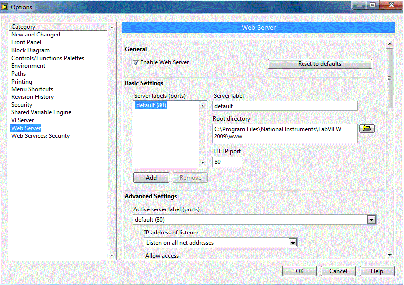
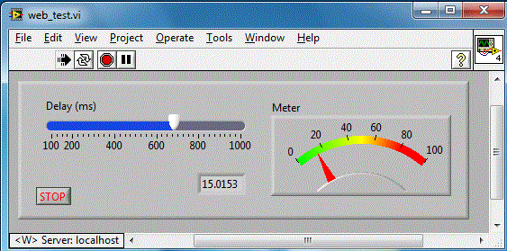
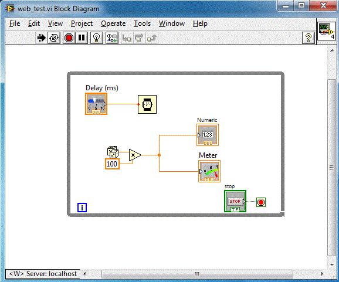
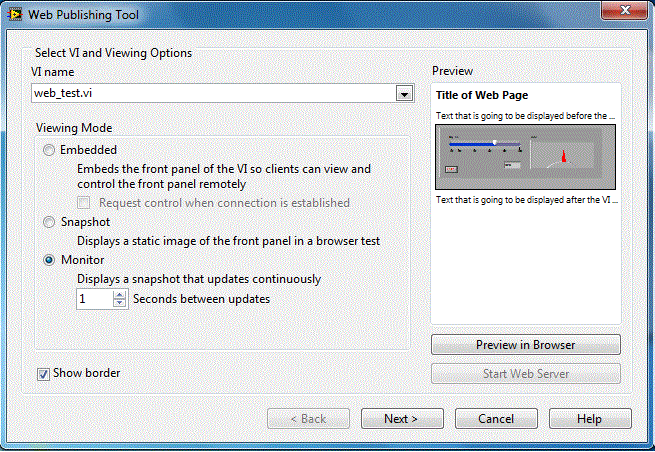
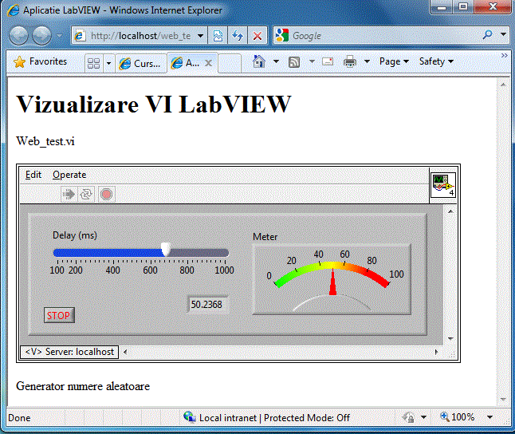

Configurare Web Server
LabVIEW dispune de facilitati pentru afisarea ecranelor "Front Panel" in pagini web. Pentru utilizarea facilitatilor WEB se fac
o serie de configurari. Prima configurare se refera la "Web Server". Din meniul principal, se alege Tools-->Options-->Web Server si se obtine:

Se valideaza optiunea "Enable Web Server". In acest moment, s-a validat functionarea Web Server-ului la adresa implicita:
http://localhost:80 Folder-ul implicit pentru acest server fiind C:\Program Files\National Instruments\LabVIEW 2009\www. In acest
folder vor fi plasate paginile WEB care vor afisa VI-uri. Pagina implicita fiind index.html respectiv : http://localhost:80/index.html
Realizarea aplicatiei ce urmeaza a fi publicata pe WEB
Vom crea un VI web_test de forma:

In cazul in care este validat Web Server-ul, in coltul stanga jos este afisata adresa acestuia.
Diagrama bloc fiind:

Realizarea paginii web
Odata activat serverul, VI-ul care ruleaza pe calculatorul server poate fi vizualizat in diverse pagini WEB. Daca
serverul este configurat cu o adresa IP, paginile plasate in folder-ul implicit, respectiv C:\Program Files\National Instruments\LabVIEW 2009\www,
pot fi accesate din reteaua Intrnet. Paginile web pot fi create automat astfel: din meniul principal, se alege Tools-->Web Publishing Tool si se obtine:

Se vor urmarii pasii din aceasta aplicatie, se vor seta corect informatiile cerute dupa care se genereaza o pagina WEB
si se salveaza in in folder-ul implicit, respectiv C:\Program Files\National Instruments\LabVIEW 2009\www cu numele implicit web_test.html .
Confinutul acestui fisier fiind:
Se lanseaza pagina web de la adresa: http://localhost/web_test.html, utilizand orice browser de Internet si se
obtine:

---